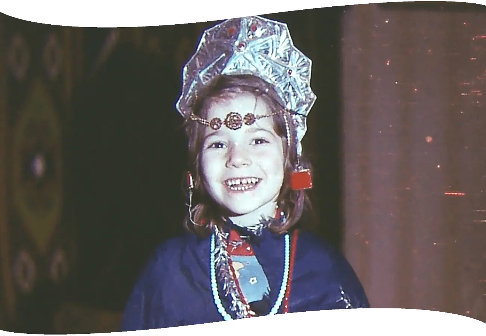

<footer class="relative w-full overflow-hidden text-white">
  <!-- Desktop SVG and footer (only shows on lg+) -->
  <div class="relative hidden w-full max-w-full lg:block">
    

    <!-- Chapters container: 4 in a row on desktop -->
    <div
      id="link-to-four-chapters-desktop"
      class="absolute z-10 grid w-full grid-cols-4 gap-12 px-8 py-16 transform -translate-x-1/2 top-[130px] xl:top-[330px] left-1/2"
    >
      <!-- Chapter 1 -->
      <section class="flex flex-col items-center text-center">
        <h2 class="mb-2 text-[30px] xl:text-[40px] 2xl:text-[60px]">01</h2>
        <h3 class="mb-8 text-[16px] xl:text-[18px] 2xl:text-[22px]">
          Почему я уехала
        </h3>

        <a href="firstPage.html" class="inline-block text-center">
          

          <div
            class="px-6 py-3 text-sm border border-white rounded-full text-white font-normal font-['Roboto'] bg-transparent transition-all duration-200 ease-in-out lg:px-5 lg:py-2.5 lg:text-sm xl:px-6 xl:py-3 xl:text-base 2xl:px-7 2xl:py-3.5 2xl:text-lg hover:bg-white/10 hover:text-white active:bg-[#FADADD] active:text-[#412744] active:scale-[0.97] focus:outline-none focus-visible:ring-2 focus-visible:ring-white/60"
          >
            Читать далее
          </div>
        </a>
      </section>

      <!-- Chapter 2 -->
      <section class="flex flex-col items-center text-center">
        <h2 class="mb-2 text-[30px] xl:text-[40px] 2xl:text-[60px]">02</h2>
        <h3 class="mb-8 text-[16px] xl:text-[18px] 2xl:text-[22px]">
          Прилетели мы в Израиль
        </h3>

        <a href="forthPage.html" class="inline-block text-center">
          
          <div
            class="group relative overflow-hidden border border-white rounded-full text-white font-['Roboto'] bg-transparent tracking-wide transition-all duration-300 ease-in-out hover:bg-white/10 hover:scale-[1.02] active:bg-[#FADADD] active:text-[#412744] /* Base (mobile & tablet) */ px-6 py-3 text-sm /* Desktop breakpoints */ lg:px-5 lg:py-2.5 lg:text-sm /* smaller on small desktops */ xl:px-6 xl:py-3 xl:text-base /* normal size on larger desktops */ 2xl:px-7 2xl:py-3.5 2xl:text-lg /* slightly bigger on very large desktops */"
          >
            Читать далее
          </div>
        </a>
      </section>

      <!-- Chapter 3 -->
      <section class="flex flex-col items-center text-center">
        <h2 class="mb-2 text-[30px] xl:text-[40px] 2xl:text-[60px]">03</h2>
        <h3 class="mb-8 text-[16px] xl:text-[18px] 2xl:text-[22px]">
          Моя Маша
        </h3>

        <a href="eightPage.html" class="inline-block text-center">
          
          <div
            class="group relative overflow-hidden border border-white rounded-full text-white font-['Roboto'] bg-transparent tracking-wide transition-all duration-300 ease-in-out hover:bg-white/10 hover:scale-[1.02] active:bg-[#FADADD] active:text-[#412744] /* Base (mobile & tablet) */ px-6 py-3 text-sm /* Desktop breakpoints */ lg:px-5 lg:py-2.5 lg:text-sm /* smaller on small desktops */ xl:px-6 xl:py-3 xl:text-base /* normal size on larger desktops */ 2xl:px-7 2xl:py-3.5 2xl:text-lg /* slightly bigger on very large desktops */"
          >
            Читать далее
          </div>
        </a>
      </section>

      <!-- Chapter 4 -->
      <section class="flex flex-col items-center text-center">
        <h2 class="mb-2 text-[30px] xl:text-[40px] 2xl:text-[60px]">04</h2>
        <h3 class="mb-8 text-[16px] xl:text-[18px] 2xl:text-[22px]">
          Моя мама
        </h3>

        <a href="ninePage.html" class="inline-block text-center">
          
          <div
            class="group relative overflow-hidden border border-white rounded-full text-white font-['Roboto'] bg-transparent tracking-wide transition-all duration-300 ease-in-out hover:bg-white/10 hover:scale-[1.02] active:bg-[#FADADD] active:text-[#412744] /* Base (mobile & tablet) */ px-6 py-3 text-sm /* Desktop breakpoints */ lg:px-5 lg:py-2.5 lg:text-sm /* smaller on small desktops */ xl:px-6 xl:py-3 xl:text-base /* normal size on larger desktops */ 2xl:px-7 2xl:py-3.5 2xl:text-lg /* slightly bigger on very large desktops */"
          >
            Читать далее
          </div>
        </a>
      </section>
    </div>

    <!-- Contact button + socials below all chapters -->
    <div
      class="absolute z-10 flex flex-col items-center justify-center w-full mt-10 transform -translate-x-1/2 left-1/2 top-[600px] xl:top-[1100px]"
    >
      <a
        href="contact-me.html"
        class="group relative overflow-hidden px-6 py-3 border border-white rounded-full text-white font-['Roboto'] bg-transparent text-base tracking-wide transition-all duration-300 ease-in-out hover:bg-white/10 hover:scale-[1.02] active:bg-[#FADADD] active:text-[#412744]"
        >Свяжитесь со мной</a
      >

      <p
        class="mt-16 text-white text-center text-[18px] xl:text-[20px] font-['Roboto']"
      >
        Поделиться через:
      </p>
      <div class="flex items-center justify-center pt-6 space-x-8">
        <a href="mailto:galinala.mystory@gmail.com" aria-label="Email"
          ></a>
        <a
          href="https://api.whatsapp.com/send?text=https%3A%2F%2Fgalina-lavigina-my-story.netlify.app%2F"
          aria-label="WhatsApp"
          ></a>
        <a
          href="https://www.facebook.com/sharer/sharer.php?u=https%3A%2F%2Fgalina-lavigina-my-story.netlify.app%2F"
          aria-label="Facebook"
          ></a>
      </div>
    </div>

    <!-- Copyright -->
    <section
      class="absolute z-10 w-full text-center text-[22px] xl:text-[25px] font-['Roboto'] text-white transform -translate-x-1/2 left-1/2 top-[900px] xl:top-[1400px]"
    >
      <p class="">© 2025 Галина Лавигина — все права защищены.</p>
      <p class="mt-4">
        Мы будем рады, если эта история затронет вас и вы захотите поделиться
        ею, перепостить или опубликовать.
      </p>
      <p class="mt-4">
        Пожалуйста, делайте это только с точным сохранением текста и с явным
        указанием автора — Галины Лавигиной.
      </p>
      <p class="mt-4">
        Если у вас есть вопросы, мысли или добрые слова — пишите:
      </p>
      <p class="mt-4">galinala.mystory@gmail.com</p>
    </section>
  </div>
</footer>
